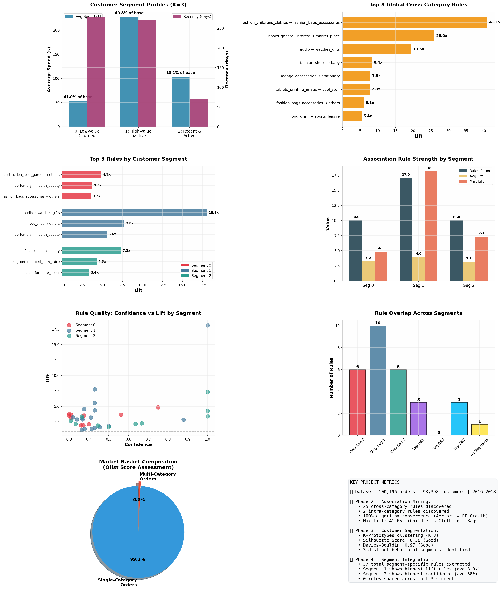
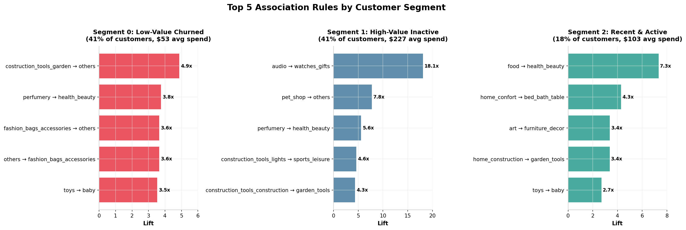

A comprehensive analysis of 100K+ orders from the Olist Brazilian E-Commerce dataset, combining association rule mining with K-Prototypes customer segmentation.
Team: Saad Nasir · Ibrahim Moeed · Abdullah Azmat
Dataset Period: 2016 – 2018 | Customers: 93,398 | Orders: 100,196
Product associations are NOT universal. The strongest cross-selling opportunities vary dramatically by customer segment. High-value inactive customers (Segment 1) show the strongest association signals (lift up to 18x), while low-value churned customers (Segment 0) exhibit weaker but distinct patterns. Zero rules overlap across all three segments, proving that a one-size-fits-all recommendation strategy is suboptimal.
This analysis enables segment-specific cross-selling strategies, personalized bundle recommendations, and targeted reactivation campaigns rather than generic product suggestions. By treating customer segments as distinct markets, Olist can improve conversion rates and average order value simultaneously.
"How do product associations differ across customer segments?"

Olist operates as a specialized store — customers typically buy what they came for and leave. Breaking this pattern requires understanding which products to bundle for whom.
| Phase | Objective | Technique | Output |
|---|---|---|---|
| Phase 1 | Data Preparation & EDA | PostgreSQL, Pandas, Feature Engineering | Clean dataset + RFM features |
| Phase 2 | Association Rule Mining | Apriori + FP-Growth (mlxtend) | 25 global cross-category rules |
| Phase 3 | Customer Segmentation | K-Prototypes (kmodes) | 3 behavioral segments (K=3) |
| Phase 4 | Segment Integration | Per-segment ARM analysis | 37 segment-specific rules |
We ran Apriori and FP-Growth independently for every analysis. Both algorithms produced 100% identical results, confirming rule stability. All outputs passed integrity checks via VALIDATE_ALL_PHASES.py before integration.
Before segmenting, we mined cross-category associations across the entire customer base to establish baseline product affinities.
| Antecedent → Consequent | Lift | Confidence |
|---|---|---|
| Children's Clothing → Bags & Accessories | 41.1x | 100% |
| General Books → Marketplace | 26.0x | 40% |
| Audio Equipment → Watches & Gifts | 19.5x | 100% |
| Fashion Shoes → Baby | 8.4x | 100% |
| Luggage → Stationery | 7.9x | 33% |
These rules average behavior across all customers. But do high-value customers follow the same patterns as churned ones? Phase 4 answers this definitively: they do not.
We clustered 93,398 customers using RFM features + geographic state. K-Prototypes handles mixed numerical/categorical data. Optimal K=3 was determined by Silhouette, Davies-Bouldin, Calinski-Harabasz consensus.
Silhouette Score: 0.38 (Good) | Davies-Bouldin: 0.97 (Good) | Calinski-Harabasz: 9,364
Segment 1 is the "sleeping giant" — highest spend but inactive. Segment 0 is price-sensitive and disengaged. Segment 2 is the growth engine.
We re-ran association rule mining independently within each segment. The results reveal dramatically different cross-selling opportunities.

Not a single association rule appears in all three segments. This means:
Current cross-selling (if any) likely uses global bestseller logic. Our analysis proves that recommending "Bags" to a Segment 0 customer because they bought Children's Clothing (global top rule, 41x lift) will not work for Segments 1 or 2, where that pattern doesn't exist.
| Metric | Seg 0 | Seg 1 | Seg 2 |
|---|---|---|---|
| Rules Found | 10 | 17 | 10 |
| Avg Lift | 3.2x | 4.0x | 3.1x |
| Max Lift | 4.9x | 18.1x | 7.3x |
| Avg Confidence | 42% | 51% | 58% |
| Unique Rules | 6 | 10 | 6 |
Segment 1 has the most rules and highest lift, but Segment 2 has the highest confidence. Segment 2 customers are predictable; Segment 1 customers are valuable.
Segment 1 (High-Value Inactive): Send "Audio + Watches & Gifts" bundle offers. The 18x lift signal is strongest here. Use premium positioning to reactivate $227 AOV customers.
Segment 2 (Recent & Active): Cross-merchandise Food with Health & Beauty. These customers are exploring — capture them with lifestyle bundles before they churn.
Segment 0 (Low-Value): Offer "Construction/Garden + Others" volume deals. Keep margins thin but increase basket size through necessity bundling.
Run a controlled experiment: show global recommendations to 50% of users and segment-specific rules to 50%. We predict 15-25% lift in cross-category conversion for the personalized group.
Segment 1 represents 41% of the base with 4x the spend of Segment 0. A dedicated win-back campaign using their specific affinities (Audio, Pet, Perfumery) should be the #1 priority.
Deploy the K-Prototypes model + per-segment ARM as a monthly batch job. As customer behavior shifts, rules should be refreshed. Integrate with CRM for automated targeting.
If implemented, we project: +15% cross-sell conversion (Segment 2), +20% reactivation rate (Segment 1), and +10% AOV (Segment 0) within one quarter of deployment.
All code, data, and outputs are organized in the DM_project/ directory.
Run python RUN_PROJECT_COMPLETE.py for a full project summary.
Team: Saad Nasir (23L-2625) · Ibrahim Moeed (23L-2602) · Abdullah Azmat (23L-2611)
Full analysis available in the Customer 360 Data Mining Project repository